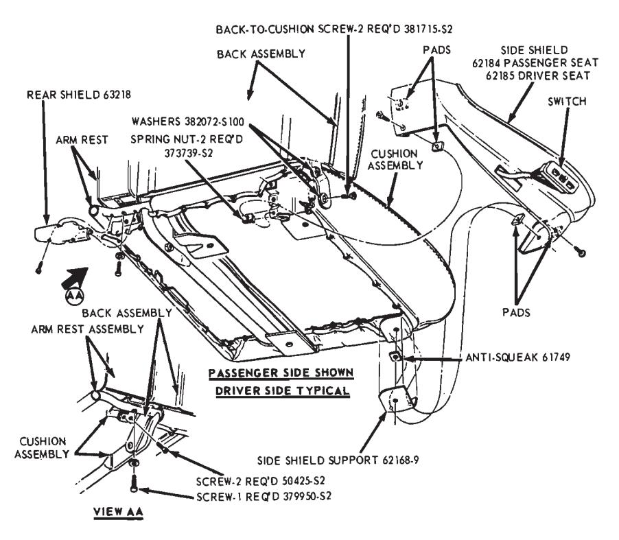
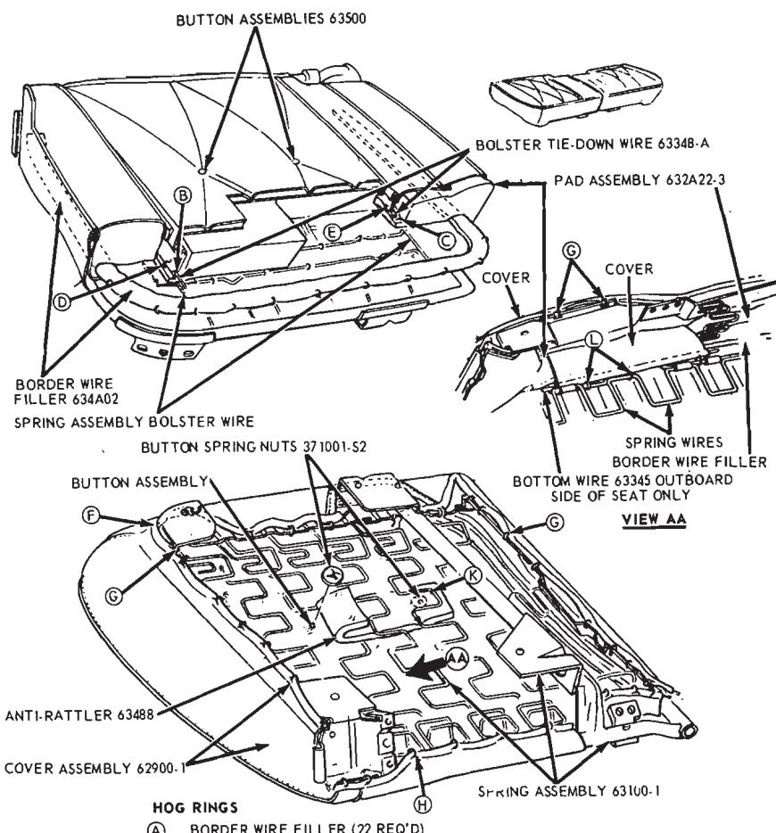
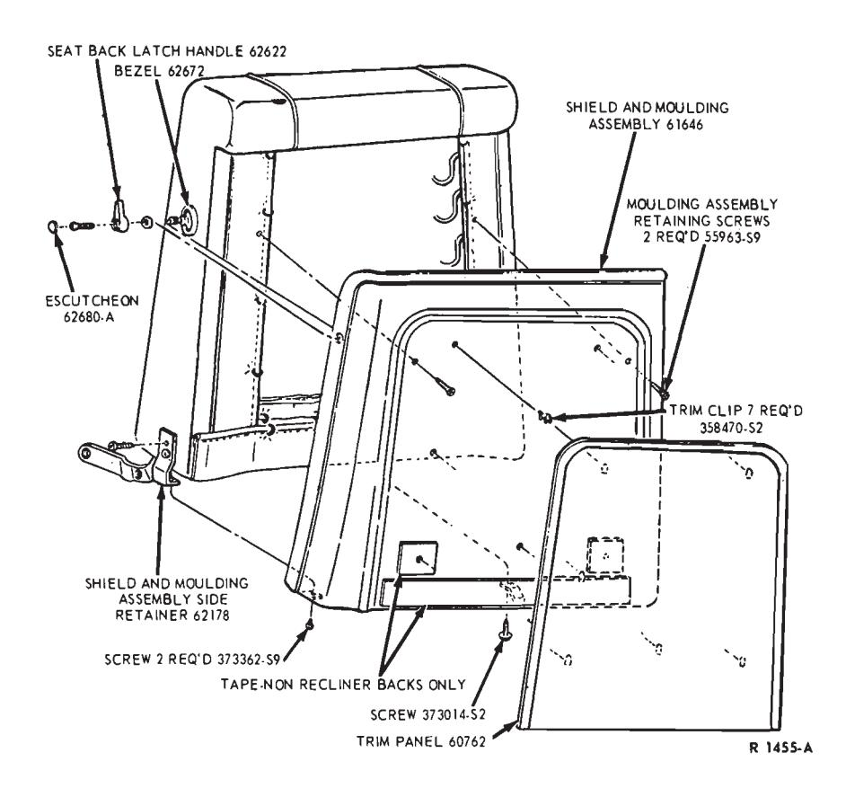

Part 41-03
Sub-parts
- Cushion Cover — 41-03-04
Component Index
| COMPONENT INDEX Applies To Models As Indicated | All Models | Ford | Mercury | Meteor | Cougar | Fairlane | Falcon | Maverick | Montego | Mustang | Lincoln- Continental | Thunderbird | Continental- Mark III |
|---|---|---|---|---|---|---|---|---|---|---|---|---|---|
| FRONT SEAT BACK COVER | |||||||||||||
| Bench Replacement | 03-03 | ||||||||||||
| Bucket and Split- | |||||||||||||
| Bench Replacement | 03-02 | 03-02 | 03-02 | 03-02 | 03-02 | 03-02 | N/A | 03-02 | 03-02 | 03-02 | 03-02 | 03-02 | |
| FRONT SEAT CENTER ARM | |||||||||||||
| REST | |||||||||||||
| Bench Replacement | 03-03 | 03-03 | 03-03 | N/A | N/A | N/A | N/A | N/A | N/A | 03-03 | 03-03 | 03-03 | |
| Bucket and Split- | |||||||||||||
| Bench Replacement | 03-03 | 03-03 | 03-03 | N/A | N/A | N/A | N/A | N/A | N/A | 03-03 | 03-03 | 03-03 | |
| FRONT SEAT CUSHION | |||||||||||||
| COVER | |||||||||||||
| Bucket and Split- | |||||||||||||
| Bench Replacement | 03-01 | 03-01 | 03-01 | 03-01 | 03-01 | 03-01 | N/A | 03-01 | 03-01 | 03-01 | 03-01 | 03-01 | |
| Bench Type Replacement | 03-03 | ||||||||||||
| REAR SEAT CUSHION | |||||||||||||
| AND BACK | |||||||||||||
| Cushion Cover Replacement | 03-04 | ||||||||||||
| Back Cover Replacement | 03-06 | ||||||||||||
| REAR SEAT CENTER | |||||||||||||
| ARM REST COVER | |||||||||||||
| REPLACEMENT | 03-07 | 03-07 | 03-07 | N/A | N/A | N/A | N/A | N/A | N/A | 03-07 | 03-07 | 03-07 | |
A page number indicates that the item is for the vehicle listed at the head of the column.
N/A indicates that the item is not applicable to the vehicle listed.
The following seat trim removal and installation procedures generally apply to all car lines. If some of the steps do not apply to the particular vehicle being serviced, proceed to the next step.
Unless otherwise noted, the illustrations shown in this section are of the Continental Mark III but they are typical of all car lines.
Front Seat Cushion Cover — Bucket and Split-Bench Type
Removal
-
Remove the seat and track assembly from the vehicle. Refer to the procedure in the applicable seat track sections 1 through 5 in Part 41-04.
-
Remove the seat cushion side shield attaching screws and separate the shield from the outboard side of the cushion (Fig. 1). Remove the attaching screws and remove the switch from the side shield. Remove the recliner seat back latch handle.
-
Remove the attaching screws and the rear shield from the armrest assembly (Fig. 1).
-
Remove the screws that attach the armrest assembly to the seat back (Fig. 1).
-
Remove the seat back-to-seat cushion attaching screws and remove the seat back from the seat cushion.
-
Remove the attaching bolts and washers and separate the seat tracks, side shield support and anti-squeaks from the seat cushion (Fig. 17, Part 41-04).
-
Disengage the button assemblies from their respective spring nuts on the underside of the cushion and remove the buttons (Fig. 2).
-
Turn the cushion upside down, and cut the hog rings that retain the cover to the spring assembly at all four sides of the cushion (F, G and H, Fig. 2).
-
Cut the hog rings that retain the cover and the bolster tie-down or listing wire to the spring assembly bolster wire on each side of the cushion (D and E, Fig. 2).
-
Cut the hog rings that retain the cover and the bottom wire to the spring wires at the outboard side of the cushion (View AA, Fig. 2), and remove the cover.
-
If the pad assembly is to be replaced, cut the pad-to-spring assembly bolster wire hog rings and remove the pad (B and C, Fig. 2).

Fig. 1 — Front Seat Back and Armrest-to Cushion Assembly
Installation
- If the pad assembly is to be replaced, transfer the border wire filler to the new pad and install the new pad assembly. Turn the cushion upside down and secure the pad to each spring assembly bolster wire with hog rings (B and C. Fig. 2).
- Transfer all bolster tie-down wires to their listings in the new cover assembly.
- With the seat upright, position the cover over the pad and spring assembly and tuck the bolster wire listings into their respective bolster depressions. Then turn the cushion upside down and fold the ends of the cover into position for installing the hog rings.
- Fasten the cover and the bottom wire to the spring wires at the outboard side of the cushion with hog rings (View AA, Fig. 2).
- Fasten the cover and the bolster tie-down or listing wire to the spring assembly bolster wire at each side of the cushion. Use hog rings at each bolster wire (D and E, Fig. 2).
- Fasten the cover to all four sides of the spring assembly. Start at the center and install hog rings alternately toward the corners about four inches apart (F, G, and H, Fig. 2).
- Insert the two button assemblies through the cover at the upper side of the cushion and fasten them in place by installing a spring nut to each button at the underside of the cushion (Fig. 2).
- With the cushion upside down on a bench, position an anti-squeak on all four track mounting points (Fig. 18). Position the side shield support over the anti-squeak at the front outboard mounting point and, then, place another anti-squeak on top of the side shield support.
- Position the track assembly to the seat cushion with the five antisqueaks and one side shield support between track and cushion as shown in (Fig. 17, Part 41-04). Install the four track-to-cushion attaching screws and washers, and torque as indicated in the applicable seat track section I through 5 in Part 41-04.
- Assemble the seat back to the seat cushion and install the four attaching screws (Fig. 1).
- Assemble the armrest to the seat back (Fig. 1).
- Assemble the rear shield to the armrest with two attaching screws (Fig. 1).
- Assemble the motor switch to the side shield and secure with attaching screws. Install the shield assembly to the outboard side of the seat cushion and install the attaching screws (Fig. 1). Install the recliner seat back latch handle.
- Install the seat and track assembly in the vehicle. Refer to the applicable seat track section 1 through in Part 41-04.
Front Seat Back Cover — Bucket and Split Bench Type
Removal
- Remove the seat and track assembly from the vehicle and remove the seat back from the cushion as described in steps I through 5 under REMOVAL in the foregoing procedure.
- Unsnap the trim panel (retained by trim clips) from the seat back or from the shield and moulding assembly (Fig. 3).
- Remove the escutcheon and retaining screw and then, remove the latch handle and washer from the seat back latch.
- Remove the retaining screws and remove the shield and moulding assembly from the seat back.
- Disengage the buttons from their respective spring nuts on the rear side of the seat back assembly and remove the buttons (Fig. 4).
- Turn the assembly rear side up and cut the hog rings that retain the cover and the top, side, and bottom wires to the spring assembly along all four sides (F, G and H, Fig. 4).
- Cut the hog rings that retain the cover and the upper and lower bolster tie-down wires to the spring assembly bolster wires (D and E, Fig. 4).
- Remove the cover.
- If the pad is to be replaced, cut the hog rings that retain the pad assembly to the spring assembly bolster wires (C, Fig. 4), and remove the pad. Since the rear pad is cemented to the spring assembly, it should be pulled off.
Installation
-
If the pad assembly is being replaced, transfer the border wire filler to the new pad and position the new pad assembly to the front side of the seat back. Turn the seat back assembly rear side up and secure the pad to the spring assembly bolster wires with hog rings (C, Fig. 4). If the rear pad was removed, secure it in place with C2AZ-19C525-A adhesive.

Fig. 2 — Front Seat Cushion Cover Installation — Bucket and Split Bench- BORDER WIRE FILLER (22 REQ’D)
- PAD ASSEMBLY-TO-SPRING ASSEMBLY BOLSTER WIRE (3 REQ’D)
- PAD ASSEMBLY-TO-SPRING ASSEMBLY BOLSTER WIRE (3 REQ’D)
- COVER AND BOLSTER TIE-DOWN WIRE-TO-SPRING ASSEMBLY BOLSTER WIRE (5 REQ’D EACH BOLSTER)
- COVER-TO-SPRING ASSEMBLY (8 REQ’D AT FRONT)
- COVER-TO-SPRING ASSEMBLY (8 REQ’D EACH SIDE)
- COVER-TO-SPRING ASSEMBLY (9 REQ’D AT REAR)
- ANTI-RATTI FR-TO-SPRING ASSEMBLY (4 REQ’D)
- COVER AND BOTTOM WIRE-TO-SPRING WIRES (3 REQ’D)
Front Seat Cushion Cover — Bench Type
Remove the seat and track assembly from the vehicle as outlined in the applicable seat section 1 through 5 in Part 41-04. Remove the seat back from the cushion. To replace the cushion cover, follow the cushion cover removal and installation procedures under Rear Seat Cushion and Back in this section (Fig. 7).
Front Seat Back Cover — Bench Type
Remove the seat and track assembly from the vehicle as outlined in the applicable seat section 1 through 5 in Part 41-04. Remove the seat back from the cushion. To replace the seat back cover follow the seat back cover removal and installation procedures under Rear Seat Cushion and Back in this section (Fig. 8).
Front Seat Center Armrest — Bucket and Split Bench Type
Removal and Installation from Vehicle
Remove the seat and track assembly from the vehicle as outlined in the applicable seat section 1 through 5 in Part 41-04. Remove the seat back from the seat cushion.
The armrest cover and the lower end of the flap assembly is attached to the rear end of the armrest assem- bly by a retainer (Fig. 5). Remove the retaining screws and the retainer assembly. The flap assembly can now be turned up to allow access to the link and support assembly upper retaining screws. Remove the link and support assembly upper and lower retaining screws and remove the assembly from the seat back.
When installing the assembly to the seat back, position the screw holes in the upper end of the flap to the corresponding holes in the upper end of the link and support assembly and install the upper retaining screws (Fig. 5). Install the link and support assembly lower retaining screws and then, position the lower end of the flap to the armrest. Secure the cover and flap to the armrest by installing the cover retainer.
Removal and Installation of Cover
Disengage the cover from the retaining tabs (View AA, Fig. 5) and remove the cover from the armrest assembly
If the pad is to be replaced, pull the old pad from the base assembly and cement the new pad to the base with C2AZ-19C525-A adhesive.
Slip the new cover over the pad and base assembly and secure it to the retaining tabs.
Front Seat Center Armrest — Bench Type
Remove the seat and track assembly from the vehicle and remove the seat back from the seat cushion as outlined in the applicable seat section 1 through 5 in Part 41-04.
To remove the armrest from the seat back and replace the cover, follow the procedures under Rear Seat Armrest in this section.
Rear Seat Cushion and Back
Removal from Vehicle
-
Lift the front edge of the rear seat cushion and pull the cushion forward. Then, remove the cushion from the vehicle.
-
Remove one of the rear quarter armrests (Part 47-02).
-
Remove the seat back lower retaining screws (Fig. 6).
-
Push the seat back down to disengage the hanger wire from the retainer brackets and remove the seat back from the vehicle.

Fig. 3 — Front Seat Back Trim Installation
Installation in Vehicle
- Position the seat back in the vehicle so that the hanger wire is under the retaining brackets (Fig. 6).
- Lift on the bottom edge of the seat back to force the hanger wire under the retaining brackets.
- Install the seat back lower retaining screws (Fig. 6).
- Position the seat cushion in the vehicle.
- Push the seat cushion rearward and down to lock the cushion in position.
- Install the rear quarter armrest.